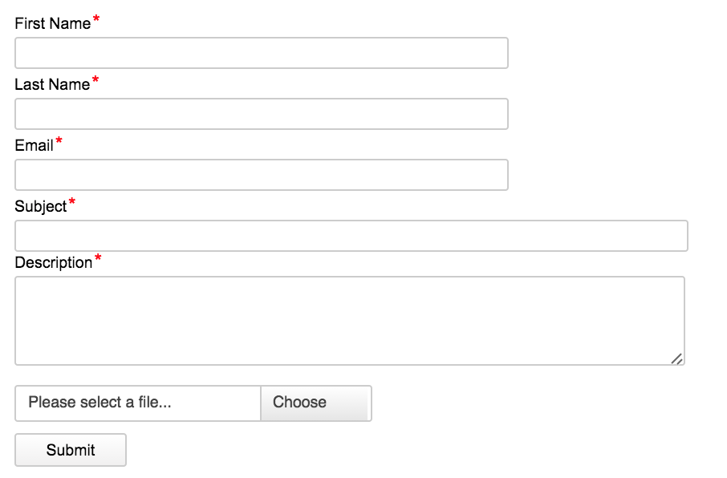

DiamanteDesk is a help desk designed to improve user experience for each of your present and future customers.
In complex systems something may always go wrong and any user should always have various options to contact your support team and let them know what should be fixed or changed. DiamanteDesk system offers several options to do that: by sending an email, via a phone call or through a web portal. Some of our Clients also prefer to embed a support form into their website.
DiamanteDesk provides functionality for creating embedded forms on the third-party websites. Take a look at the picture below to see the initial form. It can be modified according to the design of your website.

This form includes the fields for acquisition of user First Name and Last Name, Email that is going to be used to inform a user on the status of a ticket creation and processing, the Subject field for a short precise description of a request or an issue, the Description field to specify a reason to contact the support team in details and attachment field allowing to add screenshots in case there are any UI issues.
After a user clicks the Submit button, the message from the embedded form is automatically converted into a ticket in a specific branch.
To create a new embedded form, head over to System > Integrations > Embedded Forms and click Create Embedded Form at the right top corner of the screen.
Create Embedded Form screen opens. Fill out the fields to add a new embedded form to your website.
Note: Required fields are marked with asterisk (*).

| Field | Description |
|---|---|
| Branch | Select the branch where all the tickets converted from the embedded form shall be created. This may be a separate branch created specifically for such tickets or a certain website, etc. To learn more about Branches take a look at the corresponding section in DiamanteDesk User Guide. |
| Title | Specify the title that is going to be used to refer to current embedded form on the Client website or system. |
| Form Type | Currently only one form type is available in the DiamanteDesk application, hence select the Diamante Ticket option from the drop-down list. |
| CSS | This field contains default CSS, which corresponds to the initial form design. It can be edited according to the design of your website by changing border width, color, fonts settings, etc. |
| Success Message | This message is to be displayed on the website after the successful form submission. It has the following default message: Ticket has been placed successfully. |
After all the required fields are filled with all the necessary information, click Save and Close or Save at the right top corner of the screen.
After the form is saved, it appears in the Embedded Forms grid.